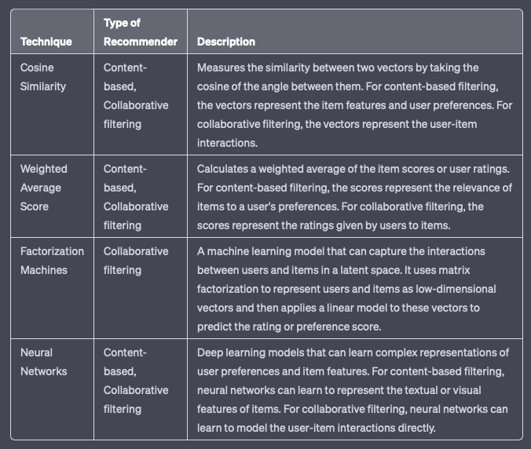
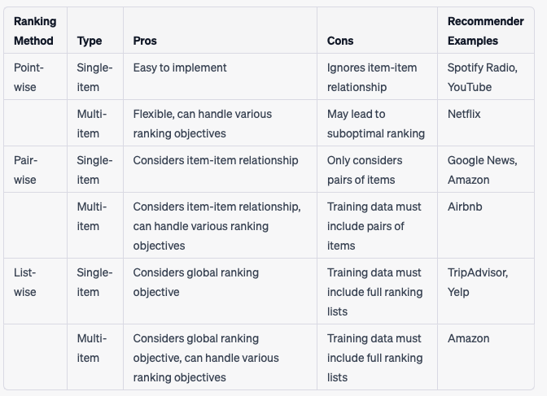
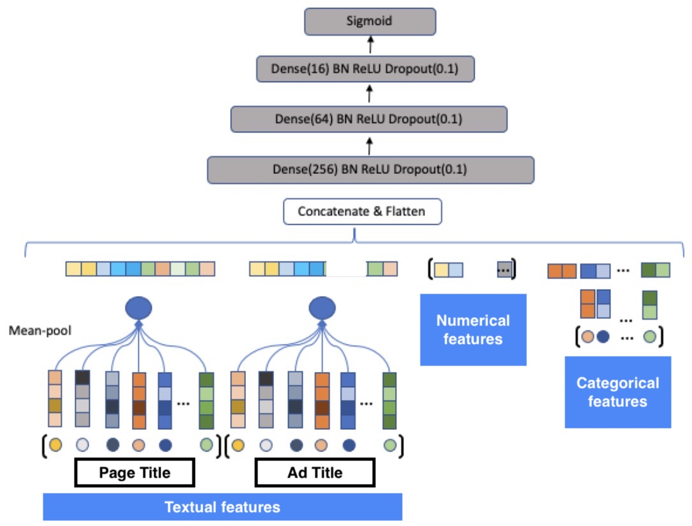
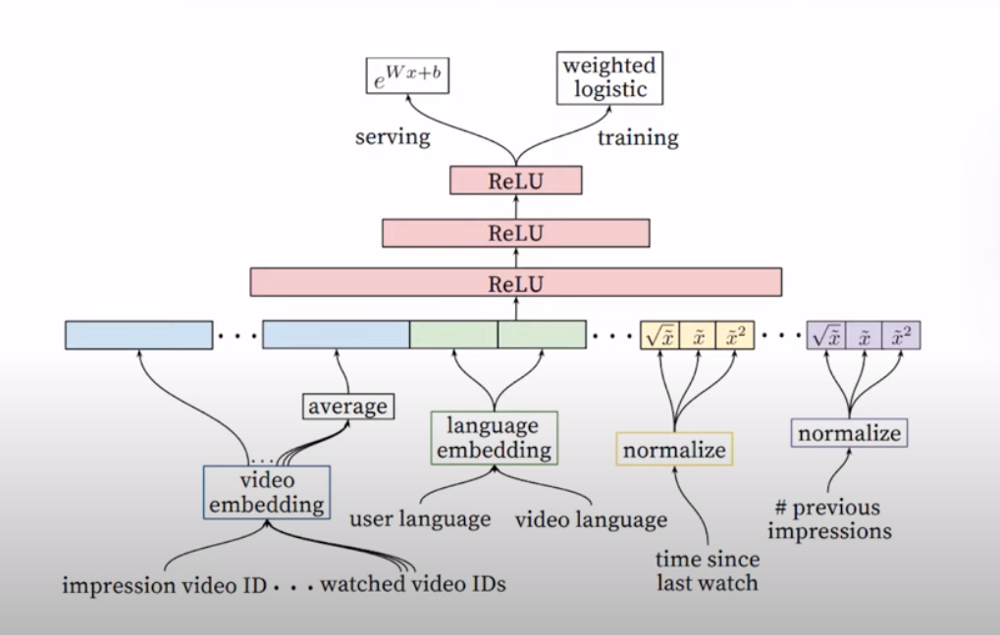

Recommendation Systems • Ranking/Scoring
- Overview
- Scoring vs. Ranking
- Why Not Let the Candidate Generator Score?
- Objective Function for Scoring
- Scoring
- Candidate Ranking
- Evaluation Metric: Normalized Discounted Cumulative Gain (NDCG)
- Position/Selection Bias in Scoring
- Putting it all together
- YouTube Ranking
- FAQs
- For deep neural networks used in recommender systems (such as Deep and Cross), is an embedding layer used for categorical features?
- Are Gradient Boosting Decision Trees commonly deployed in Recommender Systems? Which stage of the recommender pipeline are they commonly used? What are the pros and cons?
- How do you synthesize long term user history in recommender systems?
- User Representation and Feature Engineering
- Sequential Modeling for Long-Term Preferences
- Hybrid Models
- Temporal Decay and Forgetting Mechanisms
- Personalized Temporal Dynamics
- Contextual and Event-Based Updates
- Multi-Task Learning
- Denoising and Filtering
- Reinforcement Learning
- Evaluation and Adaptation
- How do handle data imbalance in model training for recommender systems?
- What are Contextual bandits? How are they used in the context of recommender systems?
- In the context of recommender systems, matrix factorization can lack scalability due to large dimensions of the user-item matrix, especially at billion-scale. How does neural collaborative filtering handle this?
- References
Overview
- Once candidate generation is complete, the recommendation system uses another model to score and rank the generated candidates in order to select a set of items to present to the user. To achieve this, the system may utilize multiple candidate generators that draw from different sources, such as related items from a matrix factorization model, user-specific features for personalization, geographic information for considering “local” versus “distant” items, popular or trending items, and social graph data that considers items liked or recommended by friends. These various sources are combined into a single pool of candidates, which is then scored and ranked by a single model.
- For instance, the system can train a model that predicts the likelihood of a user watching a video on YouTube based on query features (e.g. user watch history, language, country, time) and video features (e.g. title, tags, video embedding). Let’s look at these different source/inputs used for candidate generation:
- Related items from a matrix factorization model: This approach uses a matrix factorization technique to extract latent factors that can represent user preferences and item attributes. The matrix is factorized into two matrices, one representing users and the other representing items, and their dot product generates a score for each user-item pair. This approach can generate recommendations based on users’ past interactions and can identify items that are similar to the ones that the user has previously interacted with.
- User features that account for personalization: User features such as age, gender, and past search queries can be used to generate personalized recommendations. By analyzing the user’s past interactions and search behavior, a recommendation system can identify items that are likely to be relevant to the user.
- “Local” vs “distant” items; that is, taking geographic information into account: This approach takes into account the user’s geographic location to identify items that are geographically close to the user or are relevant to the user’s location. For example, a recommendation system for a restaurant app can use the user’s location to identify nearby restaurants.
- Popular or trending items: This approach recommends items that are currently popular or trending based on factors such as sales, views, or social media activity. This approach can be useful for introducing users to new and popular items.
- A social graph; that is, items liked or recommended by friends: This approach uses the social connections of the user to identify items that are recommended or liked by the user’s friends or social network. This approach can be particularly useful for social media and e-commerce applications, where users may be influenced by the recommendations of their friends and peers.
- The system takes these multitude of candidates, places them in a common pool of candidates that are scored by a single model and ranked according to that score.
- “For e.g., the system can train a model to predict the probability of a user watching a video on YouTube given the following:
- query features (for example, user watch history, language, country, time)
- video features (for example, title, tags, video embedding)
- “For e.g., the system can train a model to predict the probability of a user watching a video on YouTube given the following:
- The system can then rank the videos in the pool of candidates according to the prediction of the model.” (source)
- Scoring is typically more focused on personalized recommendations and may use more sophisticated machine learning models to capture complex user preferences and item relationships. For example, a scoring model may use a deep neural network to learn complex patterns in user behavior and item features, or it may incorporate contextual information such as time of day or location.
Scoring vs. Ranking
- In recommender systems, scoring and ranking are two key concepts that are used to determine the relevance of items to recommend to a user.
- Scoring refers to the process of assigning a score or a rating to each item in the candidate pool based on its similarity to the user’s preferences or past behavior. The scoring function can be based on different factors such as content similarity, collaborative filtering, or a combination of both. The scoring function is used to determine the relevance of each item to the user, and items with higher scores are considered to be more relevant.
- Ranking, on the other hand, is the process of ordering the items based on their scores. The items with the highest scores are ranked at the top of the recommendation list, while the items with the lowest scores are ranked at the bottom. The ranking process ensures that the most relevant items are presented to the user first.
- To illustrate this, let’s consider an example. Suppose a user is looking for movie recommendations based on their past viewing history. The scoring function may assign a score to each movie in the candidate pool based on factors such as genre, cast, director, and plot. The movies with higher scores would be considered more relevant to the user. The ranking process would then order the movies based on their scores, with the highest-scored movies appearing at the top of the recommendation list.
- In summary, scoring determines the relevance of each item in the candidate pool, while ranking orders the items based on their scores to present the most relevant items to the user.
Why Not Let the Candidate Generator Score?
- “Since candidate generators compute a score (such as the similarity measure in the embedding space), you might be tempted to use them to do ranking as well. However, you should avoid this practice for the following reasons:” (source)
- Using candidate generators for ranking is not a good practice because a recommendation system may have multiple candidate generators that use different sources. The scores generated by these different generators may not be comparable, making it challenging to rank the candidates. Moreover, with a smaller pool of candidates, the system can use more features and a more complex model, which can better capture the context and provide more accurate recommendations. Therefore, it is more appropriate to use a separate model for scoring and ranking the candidates.
Objective Function for Scoring
- Remember, an objective function is a mathematical function used to evaluate how well a machine learning model is performing on a task. It measures the difference between the predicted outputs of the model and the true outputs. The goal of the machine learning algorithm is to minimize or maximize the objective function, depending on whether it is a cost function or a reward function, respectively. The objective function is chosen based on the problem being solved and the specific goals of the model.
- Selecting an objective function for scoring in a recommendation system is a crucial step that requires careful consideration. In machine learning, the objective function is like a genie that learns whatever the user wishes, but the user should be mindful of what they ask for. Similarly, the choice of scoring function in a recommendation system can significantly impact the ranking of items and the overall quality of the recommendations.
- The scoring function should be designed to capture the user’s preferences and produce accurate predictions of the likelihood that a user will interact with a particular item. The objective function can be based on various factors such as user preferences, historical data, or contextual information.
- It is essential to evaluate the performance of different objective functions and select the one that produces the best results in terms of accuracy and relevance. Additionally, the objective function should be flexible enough to handle different types of input data and account for changes in user preferences over time.
- The choice of scoring function in recommendation systems can significantly impact the quality of recommendations.
- For instance, if the scoring function is focused on maximizing click rates, the system may recommend click-bait videos that do not provide a good user experience and can quickly lose users’ interest.
- Similarly, optimizing for watch time alone may lead to recommendations of very long videos, also leading to a poor user experience.
- Alternatively, the system can aim to increase diversity and maximize session watch time by recommending shorter videos that are more likely to keep the user engaged.
- Maximizing click rate might lead to recommending clickbait content that can harm the user experience. Maximizing watch time might lead to recommending long content that might bore the user. A better approach is to balance watch time and diversity, recommending shorter videos that are more likely to keep the user engaged.
Scoring
- Let’s look at different methods and techniques used for scoring.
- Cosine Similarity: A common similarity measure used in content-based filtering to calculate the similarity between the features of items and user preferences.
- Weighted Average Score: Weighted average is a method of calculating a single score for a set of items, where each item is assigned a weight based on its importance and so, this means that items that are more relevant to the user should have a higher weight in the calculation of the final score. To use weighted average in a recommender system, first, the relevance of each item to the user needs to be determined. This can be done through user feedback, such as ratings, reviews, or clicks. Each item is assigned a relevance score based on this feedback.
- Next, weights are assigned to each item based on their importance. The importance can be determined based on different factors, such as popularity, novelty, or profitability. For example, popular items can be assigned a higher weight because they are likely to be more relevant to a larger number of users.
- Finally, the weighted average score is calculated by multiplying the relevance score of each item by its weight, summing up the products, and dividing the result by the sum of weights. The resulting score represents the overall relevance of the set of items to the user.
- Weighted average can be used for both scoring and ranking in a recommender system. In scoring, the weighted average score can be used to represent the relevance of a set of items to a user. In ranking, the items can be sorted based on their weighted average scores, with the highest scoring items appearing at the top of the list.
- Factorization Machines: A popular algorithm for scoring that models interactions between features and allows for non-linear relationships.
- The table below does a comparative analysis between these different methods.

Candidate Ranking
- The candidate ranking step, formally known as the Learning to Rank (LTR) problem, involves selecting the most relevant items from the pool of candidate items to present to the user.
- Ranking can be done over multiple stages (which is typical in industry use-cases that rely on recommendations for monetization and success of their product). In the simplest dual-stage scenario, the typo stages may be called coarse and fine ranking. The various ranking options available are LTR methods, multi-armed bandits, wide-and-deep networks, etc.
- The first stage could involve LTR methods since they’re much easier to compute (and thus computation efficient) compared to other methods. Larger deep neural networks-based architectures are typically reserved for later stages, but that trend is slowly changing as compute efficiency is improving, thanks to innovation in ML acceleration.
- As a case study, let’s look at Instagram’s filtering approach for their “Explore” grid. In the candidate generation stage, account embeddings are used to identify accounts similar to those the user has previously interacted with. From these account candidates, they sample 500 media candidates (e.g., photos, stories).
- Then, these media candidates go through a three-pass ranking process which uses a combination of techniques to shrink neural network models:
- First pass: A distilled model mimics the later stages with minimal features to return the top 150 ranked candidates.
- Second pass: A lightweight neural network uses the full set of dense features and returns the top 50 ranked candidates.
- Final pass: A deep neural network uses the full set of dense and sparse features to return the top 25 ranked candidates (for the first page of the Explore grid).
- Instagram’s “funnel” architecture for multi-stage ranking is shown in the figure below (source).
- Then, these media candidates go through a three-pass ranking process which uses a combination of techniques to shrink neural network models:
Learning to Rank (LTR)
- LTR methods aim to predict the probability that a user will interact with an item, given their previous interactions and other contextual information. LTR methods can be classified into three categories: (i) point-wise, (ii) pair-wise, and (iii) list-wise methods.
- Each LTR method offers unique advantages and disadvantages. The choice of method should be guided by the specific requirements of the ranking task, the nature of the data, and the desired ranking performance.
- The tables below give an overview of each technique and which method and recommender it is viable for.


Point-wise Methods
- Point-wise methods evaluate items independently, ignoring the rank order of other items. These methods predict the relevance of a single document for a given query by training a classifier or regressor to score each item based on a set of features, such as those used in a linear model like logistic regression. The final ranking is obtained by sorting the list of results based on these individual document scores. Importantly, the relevance score assigned to each document is independent of the scores assigned to other documents in the same query result set.
- These methods often employ binary or multiclass classification models, where the task is to predict the relevance label for each item in isolation relative to other items (e.g., relevant vs. non-relevant in binary classification or multiple relevance levels in multiclass settings). The classifier can be trained using logistic regression, decision trees, or neural networks depending on the complexity of the feature space and the problem.
- Common examples of point-wise methods include Logistic Regression, Gradient Boosted Decision Trees (GBDTs), and neural networks, which are often used to predict individual item scores based on features.
Pros
- Simplicity: Point-wise methods are relatively straightforward to implement.
- Flexibility: A wide range of regression and classification algorithms can be employed, allowing the use of various features to predict relevance.
- Scalability: These methods are computationally less intensive compared to pair-wise and list-wise methods, making them suitable for large-scale applications.
Cons
- Lack of Contextual Awareness: Point-wise methods do not consider interactions between documents, potentially leading to suboptimal rankings where relative importance among documents is crucial.
- Limited Optimization: They may not capture complex dependencies or the competitive nature of documents vying for the same query, which can result in less accurate ranking performance.
Logistic Regression
- Logistic Regression is one of the simplest and most widely used point-wise methods for ranking problems, especially when dealing with binary classification tasks (e.g., relevant vs. non-relevant). In the context of ranking, Logistic Regression operates by modeling the probability that a document is relevant to a given query, using a linear combination of input features (e.g., document content, metadata, or user behavior data). The output score from Logistic Regression is often interpreted as the likelihood of relevance, and items are ranked by sorting these scores.
- This method assumes a linear relationship between the features and the relevance label and applies a logistic function to constrain the output to a probability between 0 and 1. Logistic Regression is particularly useful when interpretability is important, as the model coefficients directly indicate the strength of each feature in determining relevance.
Pros
- Simplicity: Logistic Regression is easy to implement and interpret, making it an attractive choice for initial models or when feature interpretability is important.
- Efficiency: It is computationally inexpensive, both in terms of training and inference, and scales well to large datasets.
- Well-understood Statistical Properties: Logistic Regression is based on a probabilistic model, which offers a well-understood framework for estimating probabilities, making it robust in scenarios where simple linear relationships exist between features and labels.
Cons
- Limited to Linear Relationships: Logistic Regression assumes a linear relationship between input features and the target label, which can lead to poor performance if the actual relationships are more complex.
- Susceptible to Feature Scaling Issues: Logistic Regression may not perform well if features are not properly scaled, as the model assumes uniform feature importance across different scales.
- Inability to Capture Document Interaction: Like other point-wise methods, Logistic Regression evaluates documents in isolation, failing to account for the relative importance of documents in a ranked list.
Gradient Boosted Decision Trees (GBDTs)
- Gradient Boosted Decision Trees (GBDTs) is a common point-wise ranking algorithm used in recommender systems. GBDT is an ensemble method that combines multiple decision trees to make predictions and is based on gradient descent optimization. The algorithm aims to optimize a ranking metric, such as Normalized Discounted Cumulative Gain (NDCG). GBDT iteratively trains decision trees on the negative gradients of the loss function, which represent the direction of maximum loss reduction. The predictions of these decision trees are aggregated to update the overall model predictions and ranking scores. This iterative process continues until a predefined stopping criterion is met, resulting in a ranking model that assigns scores to each item.
Pros
- High Predictive Performance: GBDTs can handle complex feature interactions effectively, leading to high-quality predictions.
- Flexibility: It can be tuned to optimize different loss functions, making it adaptable to various ranking metrics.
- Robustness: Ensemble methods like GBDT are generally more robust to overfitting compared to single-tree models.
Cons
- Computational Complexity: GBDTs can be computationally intensive, requiring significant resources for training, especially with large datasets.
- Lack of Pair-wise Context: While effective, GBDT, as a point-wise method, does not inherently model the relative order of documents, potentially missing out on ranking nuances.
Pair-wise Methods
- Pair-wise methods involve comparing items in pairs, aiming to learn a function that assigns a higher score to the preferred item in each pair. In pair-wise learning-to-rank approaches, the loss function focuses on pairs of documents. Given a pair, the objective is to learn the optimal ordering and minimize the number of inversions, which occur when the pair’s order is incorrect relative to the ground truth. Pair-wise methods align more closely with the nature of ranking tasks, as they directly model the relative order of documents.
- Pair-wise methods often employ binary classification models, where the task is to classify whether one document in the pair should be ranked higher than the other. The classifier outputs the relative preference between two items, guiding the ranking order.
- Algorithms such as RankNet, LambdaRank, and LambdaMART are prominent examples of pair-wise approaches.
Pros
- Alignment with Ranking Tasks: Pair-wise methods naturally align with the goal of ranking, focusing on the relative order of documents rather than absolute relevance scores.
- Improved Accuracy: By modeling pairwise preferences, these methods often provide more accurate rankings compared to point-wise approaches.
- Versatility: Pair-wise methods can be adapted to different ranking tasks and evaluation metrics, making them broadly applicable.
Cons
- Complexity: The need to evaluate and compare pairs can lead to increased computational complexity, especially for large datasets with many potential document pairs.
- Resource Intensity: Training pair-wise models can require significant computational resources and time, particularly when dealing with extensive query-document pairs.
LambdaRank
- LambdaRank is a widely used pair-wise ranking algorithm in information retrieval and recommender systems. It builds on gradient descent optimization to improve ranking metrics such as NDCG. LambdaRank adjusts the pairwise preference function, defined as the difference in relevance scores between two items, using a gradient-based approach. The gradient is calculated using the derivative of the ranking metric concerning the model parameters, guiding the updates in the model parameters to enhance the ranking metric.
Pros
- Metric Optimization: LambdaRank directly optimizes ranking metrics like NDCG, making it highly effective for improving ranking quality.
- Scalability: It is designed to handle large-scale datasets and can scale effectively to meet the demands of real-world applications.
- Adaptability: The method can be adapted to various pairwise preferences, allowing for flexibility in handling different types of ranking tasks.
Cons
- Implementation Complexity: The implementation of LambdaRank can be more complex compared to point-wise methods, requiring a deeper understanding of gradient-based optimization.
- Computational Resources: Like other pairwise methods, LambdaRank can be resource-intensive, necessitating considerable computational power for training on large datasets.
RankNet
- RankNet is a neural network-based pair-wise learning-to-rank algorithm developed by Microsoft. It learns to predict the relative ordering of document pairs by comparing them and minimizing a loss function that captures the difference in predicted relevance scores for the pairs. RankNet uses a probabilistic cost function derived from the logistic function, where the probability that one document is ranked higher than another is modeled. This probabilistic model is trained using gradient descent to minimize the pair-wise ranking loss. RankNet’s architecture makes it particularly useful in capturing non-linear relationships between features, making it more versatile in complex ranking tasks.
Pros
- Non-Linear Modeling: RankNet, with its neural network-based approach, is effective at capturing complex, non-linear relationships between features, leading to improved ranking performance in cases where simple linear models are insufficient.
- End-to-End Differentiable: The model’s architecture allows for the use of backpropagation to adjust parameters, making it compatible with modern machine learning frameworks.
- Flexibility: RankNet’s neural network structure can be adjusted (e.g., with different numbers of layers or units) to better fit the specific complexities of the dataset or task at hand.
- Good Performance for Medium-Sized Datasets: It can efficiently handle medium-sized datasets with moderate complexity, making it suitable for applications where both computational resources and ranking accuracy are concerns.
Cons
- Computational Complexity: As a neural network-based approach, RankNet can be more computationally expensive to train compared to simpler models, especially for large-scale datasets.
- Slower Convergence: Due to its reliance on gradient descent and non-linear optimization, RankNet may require more training time and careful tuning of hyperparameters to achieve good performance.
- Less Interpretable: Neural networks, including RankNet, tend to be less interpretable than tree-based models, making it harder to understand the underlying reasons behind specific ranking decisions.
List-wise Methods
- List-wise methods treat the entire ranked list of items as a single unit and aim to optimize a scoring function that directly maps from the item set to a ranking score. These approaches focus on optimizing the entire list of documents rather than individual or pairs of documents.
- List-wise methods offer a comprehensive approach to ranking by considering the entire list of documents. While they provide the benefit of directly optimizing ranking metrics and often result in improved ranking accuracy, they are computationally demanding and require careful implementation. Depending on the size of the dataset and the complexity of the ranking task, the trade-offs between higher accuracy and resource intensity must be considered when choosing between list-wise methods and simpler point-wise or pair-wise approaches.
- Two main techniques are used in list-wise learning-to-rank: direct optimization of information retrieval (IR) measures, such as Normalized Discounted Cumulative Gain (NDCG), used by algorithms like SoftRank and AdaRank, and minimizing a loss function defined based on the unique properties of the target ranking, as seen in ListNet and ListMLE.
- Examples of list-wise methods include ListNet, ListMLE, and LambdaMART (used for both pair-wise and list-wise ranking methods), which optimize ranking metrics like NDCG to improve the overall quality of the ranked list.
- List-wise methods can extend beyond binary or multiclass classification into learning complex ranking functions, where models are trained to directly optimize ranking metrics across an entire list, improving the overall ranking quality in contrast to just focusing on individual pairwise comparisons.
Pros
- Comprehensive Optimization: List-wise methods account for the entire list of documents, leading to more holistic optimization of the ranking function.
- Direct Metric Alignment: These methods can directly optimize the metrics of interest, such as NDCG, resulting in better performance on those metrics.
- Enhanced Ranking Quality: By considering the entire list, list-wise methods can capture complex interdependencies between documents, potentially leading to superior ranking accuracy.
Cons
- Complexity: List-wise methods are inherently more complex and computationally demanding compared to point-wise and pair-wise methods.
- Resource Requirements: The optimization process for entire lists can be resource-intensive, requiring significant computational power and memory.
- Implementation Challenges: The implementation and fine-tuning of list-wise methods can be difficult, necessitating expertise in optimization and ranking algorithms.
ListNet
- ListNet is a list-wise learning-to-rank algorithm that models the permutation probability of ranking orders. It leverages the softmax function to calculate the probability distribution over permutations of documents, and the loss function is minimized based on the difference between the predicted and ground truth ranking distributions. This approach enables ListNet to directly optimize for the correct order of the entire list of items.
Pros
- Direct Metric Optimization: ListNet directly optimizes ranking metrics, such as NDCG, which are commonly used in information retrieval and ranking tasks.
- Holistic View: The algorithm evaluates the entire list, ensuring that the relationships between all items are taken into account, leading to potentially higher ranking accuracy.
- Flexibility with Different Objectives: ListNet can be adapted to optimize for different ranking objectives or metrics by modifying the loss function.
Cons
- Computational Complexity: ListNet can be computationally expensive, particularly when dealing with large datasets or lists containing many documents, due to the need to calculate permutations.
- Resource Intensive: Training the model requires significant computational resources and memory, making it less suitable for applications with limited computational budgets.
- Sensitive to Input Features: The performance of ListNet can heavily depend on the quality of the input features, meaning that careful feature engineering is necessary to ensure optimal ranking outcomes.
LambdaMART
- LambdaMART is a highly scalable list-wise ranking algorithm that builds on the principles of LambdaRank (a pair-wise method) and combines it with Gradient Boosted Trees (GBTs). LambdaMART optimizes ranking metrics such as NDCG by adjusting the pair-wise preference loss, but it does so in a list-wise fashion by focusing on the entire set of items within a query. LambdaMART is particularly effective for large-scale ranking tasks.
Pros
- High Predictive Performance: LambdaMART often achieves superior ranking performance by leveraging the power of GBTs, which handle complex feature interactions and dependencies well.
- Scalability: LambdaMART is designed to scale efficiently to large datasets, making it suitable for real-world applications that require ranking over massive document collections.
- Optimizes for Metrics Like NDCG: By focusing on directly optimizing ranking metrics like NDCG, LambdaMART improves the relevance of the top-ranked items, which is crucial for tasks like search engine ranking and recommendation systems.
- Adaptable for Both Pair-wise and List-wise: LambdaMART can be used in both pair-wise and list-wise contexts, providing flexibility in its application to different ranking problems.
Cons
- High Computational Costs: Despite its scalability, LambdaMART can still require substantial computational resources, particularly when working with very large datasets and deep trees.
- Complexity in Implementation: The combination of GBTs and list-wise ranking objectives introduces complexity in both model training and tuning, requiring a solid understanding of boosting techniques and ranking metrics.
- Sensitive to Hyperparameters: LambdaMART’s performance can be heavily influenced by hyperparameter tuning, such as tree depth, learning rate, and the number of trees, making the optimization process time-consuming.
LTR Algorithms: A Summary
- LTR algorithms are machine learning techniques used in information retrieval and recommender systems to rank items or documents based on user preferences or relevance to a given query. Here are a few commonly used LTR algorithms:
- Point-wise Methods: Point-wise methods treat ranking as a regression or classification problem by assigning a score or label to each item independently. Some popular point-wise methods include:
- Linear Regression: Fits a linear model to predict item scores based on features.
- Support Vector Machines (SVM): Maps features to a higher-dimensional space to find a hyperplane that separates relevant and irrelevant items.
- Logistic Regression: Applies logistic function to model the probability of an item being relevant.
- Pair-wise Methods: Pair-wise methods consider pairs of items and learn to compare their relative ranks. The algorithm is trained to rank one item higher than another when it is more relevant or preferred by users. Examples of pairwise methods include:
- RankNet: Utilizes a neural network to learn the ranking function by comparing pairs of items.
- RankBoost: Adapts boosting algorithms to learn a ranking function that minimizes pairwise mis-ranking errors.
- RankSVM: Extends SVM to learn a ranking function by optimizing pairwise ranking constraints.
- List-wise Methods: List-wise methods aim to directly optimize the ranking of a list or a set of items. These methods consider the entire list as a single entity and learn a ranking function to directly optimize the list-wise ranking metric. Notable list-wise methods include:
- ListNet: Utilizes a neural network to directly learn the ranking probability distribution over lists of items.
- LambdaRank: Uses gradient boosting to optimize a list-wise ranking objective, incorporating information about pairwise preferences.
- ListMLE: Maximum Likelihood Estimation approach that models the probability of the entire ranked list.
- Point-wise Methods: Point-wise methods treat ranking as a regression or classification problem by assigning a score or label to each item independently. Some popular point-wise methods include:
Evaluation Metric: Normalized Discounted Cumulative Gain (NDCG)
- NDCG (Normalized Discounted Cumulative Gain) is a list-wise ranking metric used to evaluate the quality of a recommender system’s ranked list of recommendations.
- In addition, other metrics such as Mean Reciprocal Rank (MRR), Average Reciprocal Hit Rate (ARHR), Mean Average Precision at \(k\) (mAP@\(k\)), and Mean Average Recall at \(k\) (mAR@\(k\)) are also used.
- For a detailed discourse on recommender systems’ metrics, please refer to our Evaluation Metrics and Loss Functions primer.
Position/Selection Bias in Scoring
- Items that appear lower on the screen are less likely to be clicked than items appearing higher on the screen. However, when scoring videos, the system usually doesn’t know where on the screen a link to that video will ultimately appear.
- Querying the model with all possible positions is too expensive. Even if querying multiple positions were feasible, the system still might not find a consistent ranking across multiple ranking scores as can be seen in the image below (source).
- For a more detailed analysis on positional bias, please refer our bias primer.
Putting it all together
Production model
- As an example, a production model (for say, CTR prediction for an ad on a page) with a 4 layer multi-layer perceptron (MLP) with dimensions of 512, 128, 64, and 16 with ReLU activation function and BatchNorm applied to all layers is as shown below.

- This model is fed with the concatenation of textual, numerical, and categorical features.
- The textual features are converted to dense representation by:
- Tokenizing the input.
- Generating hash value for each token.
- Using the hash value to lookup corresponding embedding from the embedding table, and
- Performing mean-pool operation on the retrieved embedding vectors to generate a single dense representation for the text (e.g., the title of the product page).
- The categorical features (e.g., page category) are converted to a one-hot encoding and the corresponding embedding is retrieved from a randomly initialized embedding table.
- The textual features are converted to dense representation by:
- All the aforementioned features are concatenated and added as input to the MLP model with the click/non-click binary label and trained with binary cross entropy loss function.
Challenges in Scaling Up Models on Noisy Datasets
- Simply scaling up the model size without any other changes to the fine-tuning methodology can result in a drop in performance. Different techniques should be explored to mitigate this drop in performance and improve the training of larger models for noisy datasets (e.g., CTR data).
- In practice, reverse distillation (where we transfer knowledge from the smaller models to larger models) is an important technique to improve the performance and training stability of larger models, especially with inherently noisy datasets like CTR. In addition to this, projecting the semantic embeddings down to a lower dimension to allow better interaction with behavioral features and warm-starting the models with pre-trained data can also help improve the performance of larger models.
YouTube Ranking
- The YouTube ranking architecture (source) is depicted in the architecture below.

- The ranking stage operates on hundreds of videos and outputs about a dozen.
- The input to the architecture is a pair of user and video embeddings.
- During training, it leverages a weighted logistic regression model which will give you a score between 0 or 1 and that will be the ranking.
- The user and video features that go into the model are previous impressions, time since last watch, user and video language.
- It passes through feed forward network with ReLU activation as well.
- Note, this architecture takes in 1 video and 1 user at one time and iterates this over all candidates but you could have multiple servers running this in parallel.
FAQs
For deep neural networks used in recommender systems (such as Deep and Cross), is an embedding layer used for categorical features?
- In deep networks used for recommender systems, such as Deep and Cross Network (DCN), embedding layers are commonly used to handle categorical features.
- Embedding layers are a crucial component in deep networks used for recommender systems, especially for handling categorical features in an efficient and effective manner.
- Here’s why and how:
-
High Cardinality of Categorical Features: Categorical features, such as product IDs, user IDs, or item categories, often have a large number of possible values (high cardinality). It would be inefficient to represent these categories using one-hot encoding because the input vector would be extremely sparse and large. Instead, embedding layers provide a more compact and dense representation by mapping each category to a low-dimensional, continuous vector.
-
Embedding Layer Functionality: The embedding layer works by learning a fixed-size, dense representation (embedding) for each categorical value. This is achieved by initializing an embedding matrix where each row corresponds to a specific category, and the columns represent the dimensions of the embedding space. During training, the model learns to optimize these embeddings, allowing similar categories to have similar embeddings, which improves the performance of the recommendation system.
- Integration with Deep Networks: In models like Deep and Cross Network (DCN):
- The embedding layer is typically used as the first layer for categorical features.
- These embeddings are then fed into the deep (neural network) and cross (interaction terms) parts of the model, where the deep part captures non-linear feature interactions and the cross part models feature crosses in a more efficient way than traditional methods like polynomial expansion.
- Benefits:
- Dimensionality Reduction: Embeddings convert sparse, high-dimensional categorical features into dense vectors of much smaller dimensions.
- Efficient Learning: By using embeddings, models can learn latent representations of items and users, which helps capture underlying patterns and improves recommendation accuracy.
-
What is the input to the embedding layer? Give an example.
- The input to an embedding layer is typically a list or sequence of categorical indices that represent the different categorical values. These indices correspond to specific categories in the original data, and they are mapped to vectors (embeddings) in the embedding matrix.
- By using embedding layers, models can represent categorical features (such as “movie ID”) in a continuous space, which allows for efficient processing and learning of relationships between different categories. Thus, the input to the embedding layer is a list of categorical indices, which correspond to unique categories in the original feature, while the output is a dense, low-dimensional vector for each category, learned by the model during training.
- As an example, suppose you have a categorical feature called “movie ID” in a movie recommendation system. Let’s break down how this would work step by step:
- Original Data (Categorical Feature):
Let’s assume the dataset has movie IDs as follows:["Toy Story", "Avatar", "Inception", "Toy Story", "Inception"] - Assigning Indices to Categories:
Each unique movie is assigned a unique index:{"Toy Story": 0, "Avatar": 1, "Inception": 2} - Input to the Embedding Layer (Index Representation):
Now, the list of movie IDs can be represented as indices:[0, 1, 2, 0, 2] - Embedding Layer Input:
These indices are provided as input to the embedding layer. In this case, the input is:[0, 1, 2, 0, 2] - Embedding Layer Output:
The embedding layer has an embedding matrix where each row represents the learned embedding (dense vector) for a particular category. For instance, if the embedding dimension is set to 3, the embedding matrix might look something like this (random values for illustration):Embedding Matrix: [ [0.1, 0.2, 0.3], # embedding for "Toy Story" (index 0) [0.5, 0.6, 0.7], # embedding for "Avatar" (index 1) [0.9, 1.0, 1.1] ] # embedding for "Inception" (index 2) - Output of Embedding Layer:
The embedding layer will then map the input indices to their corresponding dense vectors:Input Indices: [0, 1, 2, 0, 2] Output Embeddings: [ [0.1, 0.2, 0.3], # for "Toy Story" (index 0) [0.5, 0.6, 0.7], # for "Avatar" (index 1) [0.9, 1.0, 1.1], # for "Inception" (index 2) [0.1, 0.2, 0.3], # for "Toy Story" (index 0) [0.9, 1.0, 1.1] ] # for "Inception" (index 2)
Are Gradient Boosting Decision Trees commonly deployed in Recommender Systems? Which stage of the recommender pipeline are they commonly used? What are the pros and cons?
- Gradient Boosting Decision Trees (GBDTs) are widely used in recommender systems for their flexibility, predictive power, and ability to work with structured data. GBDTs are especially common in hybrid or ranking-based recommendation frameworks, excelling when structured data or tabular information is critical. Specifically, GBDTs handle sparse data, manage complex feature interactions, and offer interpretability, making them effective for ranking tasks.
- However, they have limitations, including inefficiency in online learning, scalability concerns, and difficulties with unstructured data.
- In practice, GBDTs are often used in conjunction with other models, creating a hybrid system where GBDTs handle structured data while other methods manage cold-start issues or unstructured data. The choice to use GBDTs in recommender systems depends on the specific problem, dataset, and the balance between computational resources and model flexibility.
-
To summarize, GBDTs are commonly used because of the following reasons:
-
Structured and Contextual Data: GBDTs work well with structured data features such as user demographics, item characteristics, interaction histories, and contextual features (time, location). These are often crucial for making high-quality recommendations.
-
Effective Feature Engineering: GBDTs are strong at handling heterogeneous data and different types of features (categorical, continuous, missing). They don’t require extensive feature scaling and can capture complex non-linear relationships.
-
Interpretability: GBDTs provide interpretable models, particularly useful when you want to understand feature importance in recommendation models (e.g., why a certain item is recommended to a user).
-
Where Are GBDTs Commonly Used in the Recommender Pipeline?
-
GBDTs are primarily used in the ranking and candidate selection stage of recommender systems pipelines, often as a part of a two-stage approach:
- Candidate Generation:
- The initial step in recommender systems is to filter a large pool of items down to a smaller set of candidate items. Here, GBDTs might be combined with simpler methods such as collaborative filtering or matrix factorization to narrow down relevant items quickly.
- Ranking:
- After generating a set of candidate items, the next stage is to rank these items based on how relevant they are to the user. This is where GBDTs excel.
- GBDTs are often employed in this ranking phase, taking features like user-item interaction data (clicks, views, purchases), contextual data (time, location), and user/item attributes, and then outputting a relevance score.
- For instance, Gradient Boosted Tree-based ranking models (such as XGBoost, LightGBM, or CatBoost) are used by companies like YouTube and Alibaba in their recommender pipelines to fine-tune ranking scores for items.
- Post-processing (Ensemble Models):
- GBDTs can also be part of ensemble models, where their output is combined with outputs from other models (e.g., deep learning, collaborative filtering models). This hybrid approach improves overall recommendation accuracy.
- Candidate Generation:
Pros of Using GBDTs in Recommender Systems
- Effective with Sparse Data:
- One of the major advantages of GBDTs is their ability to handle sparse data. Sparse is common in recommendation systems because not all users interact with all items, leading to a matrix where most entries are empty or zero (user-item interaction matrix). Sparse data is often composed of categorical features that are one-hot encoded or indicator variables for specific interactions, such as a user clicking on or purchasing an item.
- Why Are GBDTs Effective with Sparse Data?
- Handling of Categorical Features: GBDTs can handle sparse data by splitting decision trees based on subsets of categorical features (e.g., item category, user age group, device type) without needing to densify the data. Unlike models that require continuous data or complex transformations, GBDTs can process one-hot encoded categorical features directly, which is useful for large and sparse interaction matrices.
- Robust to Missing Values: GBDTs can handle missing data natively. In sparse matrices, many features may be missing or set to zero. GBDT algorithms like XGBoost, LightGBM, and CatBoost include mechanisms to split nodes based on missing values or treat missing values as a distinct feature. This makes them robust and efficient when dealing with datasets where not every feature is fully populated, which is common in recommender systems.
- Automatic Feature Selection: GBDTs are naturally good at ignoring irrelevant or less informative features. In sparse data settings, many features (e.g., certain user interactions) might not contribute significantly to the predictive power of the model. GBDTs can automatically focus on the features that provide meaningful splits in the data, effectively managing sparsity without overfitting to noise.
- Non-linear Interactions: GBDTs excel in capturing complex, non-linear relationships between sparse features. For example, a user’s interaction with an item might depend on specific, rare combinations of attributes (like purchasing behavior in a specific geographic location for a particular product type). GBDTs can learn these non-linear patterns without needing extensive feature engineering.
- How GBDTs Handle Sparse Data:
- One-hot Encoding: GBDTs do not require dense representations of data. Features like user-item interactions can be represented with sparse one-hot encodings, where only a few features are “active” (non-zero) for a given observation. GBDTs can split on any of these one-hot features, allowing them to work directly with the sparse matrix.
- Efficient Splitting: During the tree-building process, GBDTs evaluate all possible splits at each node, even when the data is sparse. The decision tree will learn to split on meaningful sparse features, helping the model capture useful patterns from high-dimensional, sparse datasets.
- Categorical Encoding: Algorithms like CatBoost are specifically designed to handle categorical variables more efficiently than traditional one-hot encoding, further improving GBDTs’ performance on sparse data by reducing dimensionality and preserving information.
- Non-linearity and Feature Engineering:
- GBDTs are capable of capturing complex, non-linear relationships between features, which are common in recommendation systems (e.g., interaction between user preferences and item features).
- They also require less feature engineering compared to linear models, as GBDTs can automatically select and combine features that improve model performance.
- Interpretability:
- While deep learning models like neural collaborative filtering are often treated as “black boxes,” GBDTs provide clear insight into feature importance, making it easier for practitioners to understand why the model is recommending a particular item.
- High Performance with Little Tuning:
- In comparison to deep learning models, GBDTs often require less hyperparameter tuning to achieve strong performance, which makes them appealing in scenarios where computational resources are limited or time-to-market is critical.
Cons of Using GBDTs in Recommender Systems
- Inefficient for Continual/Online Learning:
- GBDTs are inefficient for continual or online learning, which is a significant drawback in dynamic environments like recommender systems. In many real-world recommendation applications, user preferences and item availability change frequently. Continual or online learning refers to a model’s ability to adapt to new data in real time, without retraining from scratch. GBDTs, however, are typically batch learners that operate on static datasets and need to be retrained fully to incorporate new information, leading to a computationally expensive and slow process.
- In contrast, models like deep neural networks, online matrix factorization, or reinforcement learning methods can adapt incrementally as new data becomes available, making them more suitable for dynamic recommendation environments.
- Why Are GBDTs Inefficient for Continual/Online Learning?
- Batch Learning Nature: GBDTs are built in stages by sequentially adding trees, where each new tree corrects the errors made by the previous ones. This is fundamentally a batch learning process because the model is trained on the full dataset, and any new data requires retraining from scratch or restarting the boosting process. This retraining is computationally expensive and time-consuming in systems where new interactions (e.g., user clicks or purchases) are constantly streaming in.
- Lack of Incremental Updates: Unlike algorithms such as matrix factorization or certain neural network architectures, GBDTs do not have native support for incremental learning (i.e., updating the model without retraining). For every new batch of data, the entire model must be updated to incorporate new patterns, which is not feasible in environments where immediate updates are required.
- High Computational Overhead: Training GBDTs involves iterative rounds of tree building, where each tree is constructed based on the residuals of the previous iteration. This requires accessing the entire dataset, making it costly to retrain in real-time or with frequently arriving new data. For example, if a recommender system sees new interactions every minute, retraining a GBDT on each new batch of data would significantly slow down the system’s ability to make timely recommendations.
- How This Inefficiency Manifests:
- Latency in Real-Time Systems: In online or real-time recommender systems, the goal is to quickly adapt to a user’s most recent interactions (e.g., purchases, clicks) to improve the accuracy of recommendations. GBDTs cannot efficiently process this continual stream of new data without retraining the model, leading to latency issues in deploying real-time updates.
- Resource-Intensive Retraining: In scenarios where retraining is done to accommodate new data, the process can become computationally expensive. Large-scale recommender systems with millions of users and items can’t afford to constantly retrain GBDTs without slowing down the recommendation process. In contrast, methods like stochastic gradient descent (SGD) in matrix factorization or online learning variants of neural networks can update model parameters with each new data point, providing more agile learning capabilities.
- Workarounds and Alternatives:
- Mini-batch Retraining: Instead of retraining the model on every new interaction, GBDTs can be retrained periodically (e.g., once every hour or day) in a batch-processing manner. This reduces computational load but sacrifices immediate responsiveness.
- Hybrid Models: To tackle the inefficiency of GBDTs in online learning, many recommender systems employ a hybrid approach, where GBDTs are used in combination with models that can perform real-time updates (e.g., online collaborative filtering models or reinforcement learning-based models). GBDTs can handle complex feature interactions offline, while the other models adjust dynamically to recent interactions.
- Workarounds and Alternatives:
- Scalability and Latency:
- As the dataset grows, especially in large-scale recommender systems with millions of users and items, GBDTs can become computationally expensive both in terms of training time and inference speed. While modern implementations like XGBoost, LightGBM, and CatBoost have optimized performance, GBDTs can still face scalability issues when compared to more lightweight models like matrix factorization or nearest-neighbor approaches.
- Limited to Structured Data:
- GBDTs work well with structured/tabular data but might struggle with unstructured data like text, images, or audio. Recommender systems often need to work with various types of data (e.g., user reviews, item descriptions, or multimedia content), and deep learning models like CNNs (for images) or RNNs (for sequential data) are more suitable for this kind of input.
- Cold Start Problem:
- Although GBDTs can handle sparse data, they don’t inherently solve the cold start problem (i.e., when there is little or no interaction data for new users or new items). Collaborative filtering techniques and hybrid approaches that integrate content-based filtering are generally better at addressing cold start issues.
How do you synthesize long term user history in recommender systems?
- Synthesizing long-term user history in recommender systems involves creating models that can effectively understand, represent, and leverage users’ past behavior to predict their future preferences or needs. Since long-term user history is vast and complex, the challenge is to extract relevant patterns, while avoiding problems like overfitting, data sparsity, or outdated preferences.
- By combining these approaches, recommender systems can effectively synthesize long-term user history to provide personalized, dynamic, and contextually aware recommendations that adapt to a user’s evolving preferences.
- Here’s an overview of the key steps and methods used in synthesizing long-term user history for recommendation purposes.
User Representation and Feature Engineering
- Static User Profiles: In this approach, a user’s long-term preferences are represented as a fixed feature vector. Common strategies include:
- Aggregate history: Sum or average all past interactions with items (e.g., rating, purchases, clicks).
- Demographic features: Include static features like age, gender, and location to enrich the user profile.
- Explicit features: Some platforms allow users to express preferences explicitly (e.g., by liking genres or topics), which can be combined with implicit behavioral data.
- Behavioral Embeddings: Embedding techniques are commonly used to capture users’ long-term behaviors in dense vectors.
- Word2Vec-like models: Treat user-item interactions like a sequence of words (e.g., movies watched) to generate a user embedding that summarizes long-term preferences.
- Matrix factorization: Models like Singular Value Decomposition (SVD) or Alternating Least Squares (ALS) decompose the user-item interaction matrix, capturing latent factors that represent long-term behavior.
Sequential Modeling for Long-Term Preferences
-
Recommender systems can use sequential models to capture the temporal ordering and dynamics of a user’s interactions over time:
- RNNs/LSTMs: Recurrent Neural Networks (RNNs) and Long Short-Term Memory (LSTM) networks can handle sequences of user interactions, allowing the model to learn time-dependent patterns. They are especially useful for capturing how preferences evolve over time.
- Transformers: Transformer models, like BERT4Rec, have emerged as powerful sequence models in recommender systems. They capture both long-term dependencies and dynamic shifts in preferences by using self-attention mechanisms. This can help in synthesizing user history, by weighing more recent or more important interactions higher.
Hybrid Models
-
Hybrid models combine long-term user history with short-term signals (e.g., recent browsing or purchase behavior) to enhance personalization:
- Latent factor models + time decay: Latent factor models (e.g., matrix factorization) can be combined with time-decay functions, where more recent interactions are given higher weights, but the user’s overall long-term history is still considered.
- Collaborative filtering + content-based: Hybrid models integrate collaborative filtering (CF) approaches with content-based techniques. CF benefits from long-term preferences learned from similar users, while content-based models focus on individual user-item features.
Temporal Decay and Forgetting Mechanisms
-
Not all past interactions are equally valuable for recommendation. Strategies to handle this include:
- Time decay functions: Assign decreasing importance to older interactions. For example, recent interactions (e.g., a movie watched last week) might be more predictive than something watched two years ago.
- Forgetting factors: Explicitly model a “forgetting curve” for user preferences, adjusting the relevance of old interactions or preferences that might no longer apply (e.g., users outgrowing certain tastes).
Personalized Temporal Dynamics
- Adaptive models: Different users might exhibit different rates of preference change. Some users may stick with long-term preferences, while others frequently switch. Adaptive models, such as personalized time decay, adjust how much weight to place on long-term versus short-term history for each individual user.
- Multi-scale attention mechanisms: Models like SASRec (Sequential Attentive Recommender) employ multi-scale attention to focus on both long-term patterns and short-term trends, giving the model flexibility to adjust its focus dynamically.
Contextual and Event-Based Updates
- Context-aware modeling: Long-term user history can be augmented with context (e.g., location, time of day, device type). For instance, users may exhibit different preferences in different contexts, and contextual signals can be synthesized alongside long-term preferences for more accurate recommendations.
- Event-driven updates: If a user undergoes a major life event (e.g., moving to a new city, graduating, getting married), their long-term preferences may change rapidly. Recommender systems can detect such events and adjust accordingly.
Multi-Task Learning
- By leveraging multi-task learning, a model can be trained to predict multiple aspects of user behavior simultaneously (e.g., purchases, clicks, dwell time). This helps the model learn from multiple facets of user history and synthesize richer long-term representations.
Denoising and Filtering
-
Long-term history may include noisy or irrelevant interactions (e.g., one-time purchases, accidental clicks). Techniques to denoise user history include:
- Threshold-based filtering: Discarding interactions below a certain threshold of engagement (e.g., items with low ratings or short viewing times).
- Collaborative filtering denoising: Using neighborhood-based collaborative filtering to validate whether a user’s interaction with an item aligns with their overall profile, or if it’s an anomaly.
Reinforcement Learning
-
Reinforcement learning (RL) can be used to synthesize user history by considering the long-term reward of recommendations. The RL agent can learn optimal recommendation strategies based on long-term user engagement rather than just immediate clicks or purchases.
- Policy-gradient methods: These are commonly used to optimize long-term objectives, such as increasing user retention or lifetime value, by continuously adjusting recommendations based on long-term user interactions.
Evaluation and Adaptation
- Synthesizing long-term user history requires continual evaluation and adaptation. The system needs to:
- Track performance metrics (e.g., precision, recall, user engagement, satisfaction) to ensure that long-term history improves recommendations.
- Adapt to user changes: Regularly update the user model as preferences shift over time. Monitoring shifts in behavior and refreshing user profiles periodically ensures that old data does not dominate the recommendations.
How do handle data imbalance in model training for recommender systems?
- Handling data imbalance in model training, especially for recommendation systems, is a common challenge. In recommendation systems, imbalance often arises because popular items (like movies, products, etc.) are frequently interacted with, while less popular ones have very few interactions. This can lead to the model favoring popular items over less popular but potentially more relevant ones for specific users.
- Here are several techniques to manage data imbalance in recommendation system training:
Sampling Techniques
-
Undersampling Popular Items: You can reduce the number of interactions for popular items so that the model doesn’t overfit to these interactions. This can be useful when you want to give less popular items a chance to appear more often in the training data.
-
Oversampling Rare Items: For items with fewer interactions, you can duplicate or create synthetic interactions to boost their presence in the dataset, balancing out the training data. However, this might lead to overfitting to those duplicated items.
-
Negative Sampling: Many recommendation algorithms (like Matrix Factorization or neural collaborative filtering) rely on implicit feedback (clicks, views, etc.) and assume non-interactions are negative feedback. Negative sampling can help balance the positive (observed) and negative (unobserved) interactions by selecting a subset of negative interactions to use in training, rather than using all non-interactions.
Weighted Loss Functions
-
Class-weighted Loss: You can modify the loss function to assign higher weights to underrepresented items or users. For example, if you’re using cross-entropy loss or a ranking loss function, you can increase the weight for less popular items so that the model penalizes errors related to those items more severely.
-
Focal Loss: This is a loss function that down-weights easy-to-classify examples (e.g., popular items) and focuses on harder examples (e.g., underrepresented items). Focal loss is often used in classification problems but can be adapted for recommendation systems as well.
Bias-aware Algorithms
-
Weighted Alternating Least Squares (WALS): In matrix factorization methods, you can apply weights to different interactions, such that more weight is given to less frequent items and users. WALS, for example, extends ALS (Alternating Least Squares) to account for different levels of importance in data points.
-
Cost-sensitive Learning: Some algorithms can be adapted to give higher costs to mistakes related to underrepresented items. This is similar to using weighted loss functions but may also influence other aspects of the algorithm, such as gradient updates.
Regularization Techniques
-
Item-based Regularization: Regularize the model more heavily on popular items, thus preventing them from dominating the predictions. This encourages the model to diversify its recommendations.
-
Debiasing Techniques: Recent research has introduced various debiasing techniques, such as causal inference or exposure-based models, to account for the bias towards popular items. These models can learn to recommend items while factoring in the inherent biases present in user interaction data.
Hybrid Models
-
Content-based + Collaborative Filtering: You can combine content-based recommendations (which use item metadata) with collaborative filtering. This hybrid approach allows the system to recommend lesser-known items based on their similarity to popular ones or user preferences, even when interactions are sparse.
-
Diversity Regularization: Add diversity constraints to your recommendation system, ensuring that it recommends a broader range of items, not just the most popular ones. For example, matrix factorization methods can be extended with diversity regularization terms to encourage varied recommendations.
Cross-validation with Stratified Splitting
- Ensure that you perform stratified splitting when preparing your training and validation datasets. This ensures that the rare items or users are properly represented across the splits, helping to evaluate the model’s performance on underrepresented data points effectively.
Cold-start Handling
-
Augmenting Cold-start Recommendations: When dealing with items or users that have little interaction data (cold-start problem), you can augment the data with metadata (for items) or demographic data (for users) to help the model make better recommendations despite the imbalance.
-
Transfer Learning: Use pre-trained models or knowledge from related tasks or domains (e.g., text classification, image recognition) to help recommend items with limited interaction data by leveraging transferable features from other data sources.
Active Learning
- Active learning strategies can help mitigate imbalance by specifically querying for user feedback on less popular items or users that are underrepresented in the dataset. This can help create more balanced data over time.
Fairness Constraints
- Fairness-aware recommendation systems explicitly consider fairness constraints to prevent the system from favoring items from a specific group (e.g., popular items). These models aim to ensure that all items or users, regardless of their frequency in the dataset, are treated fairly.
Model Architecture Adjustments
-
Attention Mechanisms: You can incorporate attention mechanisms in neural recommendation architectures (such as in deep learning-based recommenders like Neural Collaborative Filtering or Transformers). Attention can help the model focus on underrepresented items or users in a more dynamic and adaptive way.
-
Graph-based Models: Graph-based approaches (e.g., Graph Neural Networks) can propagate information from popular to less popular nodes (items or users) through their connections, potentially improving recommendations for underrepresented items.
-
By using a combination of these methods, you can effectively mitigate the impact of data imbalance in recommendation systems and improve the performance, fairness, and diversity of your recommendations.
What are Contextual bandits? How are they used in the context of recommender systems?
- Contextual bandits are a type of decision-making algorithm that balances exploration and exploitation, a core challenge in reinforcement learning. They extend the multi-armed bandit problem by incorporating additional context to guide decision-making, making them a powerful framework for environments like recommender systems.
- In these systems, the goal is to make the best possible recommendation for a user based on both their individual context and the system’s overall learning. By balancing the trade-off between exploring new content and exploiting known preferences, contextual bandits can continuously improve the personalization of recommendations in real time, making them ideal for dynamic, user-interaction-heavy environments.
Multi-Armed Bandit Problem
- Imagine you have several slot machines (or “arms”) and each one gives a different reward when pulled. The goal is to maximize the total reward by pulling the most rewarding arms. However, you don’t know beforehand which arm is the best.
- Exploration vs. Exploitation: You need to balance:
- Exploration: Trying out different arms to learn which one gives the best reward.
- Exploitation: Pulling the arm that seems to give the best reward based on what you’ve learned so far.
Contextual Bandits
- Contextual bandits extend the multi-armed bandit problem by introducing context into the decision process. Rather than just choosing an arm based on past reward alone, contextual bandits take into account the current situation or “context” before making a decision.
- Context: The “context” refers to additional information that can help in decision-making. For example, in a news website, the context might include user information such as location, browsing history, or device type.
- Action: Based on the context, the algorithm decides which action to take (which arm to pull, or which recommendation to make).
- Reward: After the action, the algorithm observes the reward (e.g., whether the user clicked the recommended item or not) and uses this feedback to improve future decisions.
How Contextual Bandits Work
- Context Observation: The system observes some contextual features of the current situation. For example, in a recommender system, this could be user preferences, time of day, or browsing history.
- Action Selection: Based on the observed context, the algorithm chooses an action from a set of possible actions. In the case of a recommender system, this could be selecting a piece of content to recommend to the user.
- Receive Reward: The system receives a reward based on the user’s response to the selected action (e.g., whether the user clicked on the recommended item or made a purchase).
- Update Strategy: The algorithm updates its strategy using the reward received, aiming to improve future recommendations by learning from past experience.
Contextual Bandits vs. Full Reinforcement Learning
- Contextual bandits are a simplification of full reinforcement learning. In full reinforcement learning, the agent needs to learn from sequences of actions and long-term rewards (i.e., the environment’s state changes over time). In contrast, contextual bandits only deal with one-time, immediate rewards and do not require learning long-term strategies. This makes them computationally simpler and ideal for situations where immediate feedback is available, like in recommender systems.
Use of Contextual Bandits in Recommender Systems
- Recommender systems aim to provide personalized suggestions to users, such as recommending products, articles, or movies based on the user’s preferences. Contextual bandits are an effective method for improving these recommendations by incorporating real-time user data and balancing exploration of new items with exploiting known preferences.
Context as User Data
- In a recommender system, the context can include various user-related features, such as:
- Demographics (e.g., age, gender, location).
- Browsing history or previous interactions.
- Device type (mobile, desktop).
- Time of day, day of the week, etc.
- The recommender system uses this context to make more relevant suggestions. For example, a user might prefer different types of recommendations when browsing on their mobile device during a morning commute compared to using their laptop in the evening.
Actions as Recommendations
- Each possible action in the contextual bandit framework corresponds to a recommendation the system can make. For instance, the action might be recommending one specific article or product from a larger set. The system will try to maximize the likelihood that the user interacts with (e.g., clicks, purchases, watches) the recommended item.
Rewards as User Feedback
- The reward is the feedback that the system gets after making a recommendation. This could be:
- A click on a recommended article.
- A purchase of a recommended product.
- Time spent reading or engaging with the content.
- Positive rewards (e.g., a click or purchase) reinforce the action (i.e., making a similar recommendation in similar contexts in the future), while negative rewards (e.g., no interaction) encourage exploration of other options.
Balancing Exploration and Exploitation
- Exploration: The system occasionally tries new recommendations that the user has not previously interacted with. This helps discover new preferences that may not be apparent from past behavior.
-
Exploitation: The system recommends items that it believes the user is likely to engage with based on past behavior and the current context.
- For example, a user might have previously interacted with sports content, but occasionally showing them news articles in different genres (exploration) can help the system learn if the user has other interests as well.
Online Learning
- Contextual bandits are highly suited for online learning, meaning they can adapt to user behavior in real-time. The system can continuously refine its recommendations as it gathers more feedback from the user, making it particularly effective in dynamic environments.
Practical Applications in Recommender Systems
- News Websites:
- Contextual bandits are used to recommend news articles based on a user’s reading history, location, or even the time of day. The system tries to maximize engagement (e.g., clicks on articles) by learning which types of stories each user is interested in.
- E-Commerce:
- E-commerce platforms like Amazon use contextual bandits to recommend products. The context could include the user’s previous purchases, browsing history, or even the current season (e.g., recommending holiday-related products in December).
- Streaming Services:
- Platforms like Netflix and YouTube can use contextual bandits to recommend movies, TV shows, or videos. The system learns from the user’s watching habits, such as preferred genres, and continuously optimizes the recommendations in real time based on user interactions.
- Advertising:
- Contextual bandits can be used in online advertising to optimize which ads are shown to users. The context could include the user’s browsing history, current search query, or location. The system balances between showing ads that have historically performed well (exploitation) and trying new ads that might be relevant to the user (exploration).
Advantages of Contextual Bandits in Recommender Systems
- Efficiency: They provide a more efficient way of personalizing content by considering real-time user context and adapting dynamically to user behavior.
- Scalability: Contextual bandits are computationally less expensive than full reinforcement learning, making them scalable for large systems with many users and items.
- Improved Personalization: By incorporating the context, they can offer more accurate and personalized recommendations.
- Real-time Adaptation: They can continuously learn and adjust recommendations based on immediate user feedback, allowing the system to quickly adapt to changing user preferences.
Challenges
- Cold Start Problem: For new users, the system may struggle to balance exploration and exploitation effectively due to a lack of data.
- Context Representation: Deciding which features to use as context and how to represent them efficiently can be challenging.
- Exploration Risks: Too much exploration can lead to recommending items that users find irrelevant or uninteresting, which may negatively affect user satisfaction.
In the context of recommender systems, matrix factorization can lack scalability due to large dimensions of the user-item matrix, especially at billion-scale. How does neural collaborative filtering handle this?
- Neural Collaborative Filtering (NCF) effectively addresses the scalability limitations of traditional Matrix Factorization (MF) approaches, particularly when managing large-scale user-item interactions, by leveraging the power of deep learning.
- Unlike MF, which struggles with scalability, NCF reduces the problem size using low-dimensional embeddings and avoids explicitly working with the full user-item interaction matrix.
- Additionally, NCF captures non-linear relationships between users and items through deep neural networks and employs efficient training strategies like mini-batch stochastic gradient descent (SGD) and GPU acceleration. These features make NCF a more scalable and flexible solution for modern recommender systems dealing with billion-scale data.
- Here’s how NCF handles the scalability issue and overcomes the limitations of matrix factorization.
Limitations of Matrix Factorization at Large Scale
- MF models user-item interactions using a factorization technique that decomposes the user-item interaction matrix into lower-dimensional latent feature vectors for users and items. Despite its success, it faces challenges at large scale:
- Large Dimensionality: When the number of users and items grows into the millions or billions, the size of the user-item matrix (which might be sparse) becomes enormous. Factorizing this matrix efficiently becomes computationally expensive.
- Linear Relationships: Traditional MF assumes that the interaction between a user and an item can be represented as a simple dot product between the user and item latent vectors, which may not be able to capture more complex, non-linear relationships in the data.
Neural Collaborative Filtering (NCF) Overview
- NCF introduces deep neural networks to model the interactions between users and items, allowing it to capture more complex patterns. It extends the idea of latent factor models like MF by using neural networks to learn an arbitrary, non-linear function to represent user-item interactions.
- In NCF, the idea is to replace the dot product used in MF with a more flexible neural architecture that can better capture intricate user-item relationships.
How NCF Improves Scalability
- NCF handles the scalability challenge in several ways:
Embedding Layers to Handle Large Dimensions
- Instead of directly working with the full user-item matrix, NCF maps users and items into low-dimensional dense embedding vectors. These embeddings are learned during the training process:
- User Embeddings: For each user, NCF learns a low-dimensional vector representation (embedding) that captures the user’s preferences.
- Item Embeddings: Similarly, for each item, NCF learns a low-dimensional vector representation that captures its properties.
- By learning embeddings, NCF reduces the dimensionality problem of the user-item matrix, since the embeddings are much smaller than the original interaction matrix. These embeddings are typically 10s to 100s of dimensions, instead of working with the total number of users or items directly, which could be in the millions or billions.
Parameter Sharing with Embeddings
- In NCF, each user and item is represented by an embedding vector, and the number of parameters scales linearly with the number of users and items rather than quadratically with the size of the user-item matrix. This parameter sharing is efficient, and the embedding matrices (one for users and one for items) are typically much smaller than the original user-item interaction matrix.
- This allows the model to avoid explicitly storing or processing the full user-item matrix, making NCF more scalable than traditional MF at large scales.
Non-linear Interaction Modeling
- In matrix factorization, the interaction between user and item embeddings is represented as a dot product, which is a linear operation. This limits the model’s ability to capture more complex relationships in the data.
- NCF overcomes this limitation by replacing the dot product with a deep neural network (DNN) that models the interaction between user and item embeddings in a non-linear way. This neural network is composed of multiple fully connected layers that progressively learn more complex representations of user-item interactions.
- The flexibility of the neural network allows NCF to learn more nuanced patterns, which can improve recommendation quality, especially in large datasets with diverse user behaviors and item properties.
Generalized Matrix Factorization (GMF)
- In some versions of NCF, the authors combine the strengths of matrix factorization with deep learning by introducing a Generalized Matrix Factorization (GMF) layer. This layer can still incorporate the idea of latent factor dot products, but it is enhanced by additional non-linear transformations via deeper layers of the neural network. This hybrid approach improves scalability by making use of factorized representations while still capturing complex patterns.
Efficient Learning via Mini-batch Stochastic Gradient Descent (SGD)
- NCF models are trained using mini-batch stochastic gradient descent (SGD) or its variants (e.g., Adam optimizer), which allows the model to learn efficiently on large-scale data. Instead of computing updates on the entire dataset (which could be prohibitively large), NCF processes small random batches of user-item interactions, reducing memory and computation requirements while allowing the model to scale to billions of users and items.
Parallelism and Hardware Acceleration
- Deep learning frameworks (e.g., TensorFlow, PyTorch) allow NCF to take advantage of GPU acceleration and distributed computing. Neural networks can be trained in parallel, with embeddings and parameters distributed across multiple machines or GPUs, which significantly speeds up training and allows the model to handle massive datasets efficiently.
Flexible Architecture
- The architecture of NCF can be easily extended or modified depending on the scale and the specific problem. For example:
- Deeper Networks: More layers can be added to the neural network for richer representation learning if the dataset is large and complex.
- Wide and Deep Approach: NCF can combine simple linear models (like MF) with deep models in a hybrid manner, where simpler models handle common patterns efficiently, while deeper models capture more complex, rare interactions.
- This flexibility allows NCF to be tailored to the scalability needs of the system without losing performance.
Comparison with Matrix Factorization
| Feature | Matrix Factorization | Neural Collaborative Filtering (NCF) |
|---|---|---|
| Interaction Model | Dot product of user and item latent factors | Non-linear interaction via neural networks |
| Scalability | Struggles with billion-scale due to large matrices and memory requirements | Scales better through embedding layers and mini-batch training |
| Representation Learning | Linear relationships between users and items | Can capture complex, non-linear user-item relationships |
| Training | Alternating Least Squares (ALS) or SGD | Mini-batch SGD, accelerated via GPUs and distributed systems |
| Flexibility | Limited to linear factorization | Flexible architecture, can integrate various neural layers |
| Handling Sparsity | Struggles with extreme sparsity in the user-item matrix | More robust as embeddings are learned directly from data |
NCF in Practice
- Several large-scale systems and platforms, such as YouTube, Amazon, Netflix, and others, have adopted neural collaborative filtering or variants of deep learning-based collaborative filtering for their recommendation engines. These systems have vast datasets with billions of users and items, making traditional matrix factorization infeasible at this scale, while NCF allows for more efficient and accurate recommendations.
References
- Google’s Recommendation Systems Developer Course
- Coursera: Music Recommender System Project
- Coursera: DeepLearning.AI’s specialization.
- Recommender system from learned embeddings
- Google’s Recommendation Systems Developer Crash Course: Embeddings Video Lecture
- ALS introduction by Sophie Wats
- Matrix Factorization
- Recommendation System for E-commerce using Alternating Least Squares (ALS) on Apache Spark